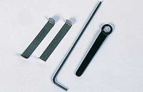
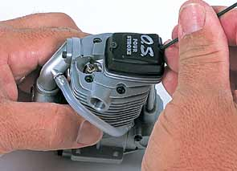
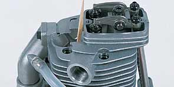
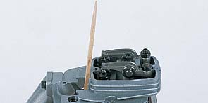
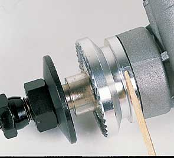

Четырех-тактные двигатели это чудо миниатюрной механической инженерии. Они достаточно
маленькие, чтобы поместиться в вашей ладони и при этом развивают мощность до 2л.с. Хотя они
содержат в два раза больше двигающихся частей, чем 2-тактные двигатели, четырехтактники могут надежно
работать часами при минимальном обслуживании. Легко понять, что при таком количестве двигающихся деталей,
временные настройки приобретают очень важное значение для надежной работы. Со временем двигающиеся детали
изнашиваются и зазоры между ними увеличиваются. Наиболее критичными являются зазоры между коромыслами клапанов
и штоками впускного и выпускного клапанов. Эти зазоры определяют время открытия клапанов, которые в свою очередь
влияют на мощность двигателя. Слишком большой или слишком маленький зазор может существенно повлиять на то,
как двигатель работает.
Когда же необходимо регулировать клапана?
Зазоры в клапанах двигателя обычно правильно выставляются еще на заводе. Вам, возможно,
никогда не понадобится регулировать клапана в вашем двигателе; это зависит от того,
как часто вы его используете. Однако имеются определенные симптомы, которые указывают на
необходимость регулировки зазоров. Проверьте зазоры, если имеет место значительное снижение
мощности, а также после сборки-разборки вашего двигателя. Вот как это делать.
|
Для регулировки клапанов в 4-тактнике O.S. вам понадобятся тонкий (0.04 мм) и
толстый щупы, торцевые ключи на 1,5 мм и на 5 мм. Моторы других производителей
могут потребовать инструменты других размеров.
|
 |
|  |
Сначала снимите крышку, закрывающую коромысла клапанов. Проверяйте и устанавливайте
зазоры в клапанах только на холодном двигателе. Если вы будете проверять на горячем
двигателе, зазоры, из-за теплового расширения металла, получатся меньше, чем на холодном.
|
|
Перед началом регулировок убедитесь, что оба толкателя находятся в своем
нижнем положении, т.е. поршень находится в верхней мертвой точке (ВМТ) между
тактами сжатия и рабочего хода. Существует также еще ВМТ положение между тактами
выпуска и впуска. Чтобы найти положение ВМТ выверните свечу и понаблюдайте за движением
поршня при проворачивании вала двигателя. Когда поршень достигает наивысшей точки в цилиндре, он
находится в ВМТ. Вставьте зубочистку в свечное отверстие и наблюдайте за ее подъемом. Прекратите
проворачивать вал непосредственно перед тем, когда зубочистка начнет опускаться в цилиндр. На опорной
шайбе пропеллера процарапайте тонкую линию как продолжение линии на картере двигателя. (4-тактники
производства ОС уже имеют такую метку на опорной шайбе)
|

 |
|  |
Теперь нужно найти нужное положение между тактами сжатия и рабочего хода.
Установите пропеллер и свечу, затем начните поворачивать пропеллер против часовой
стрелки, пока не почувствуете компрессию. Поверните пропеллер еще на 1/4 оборота пока
метка на опорной шайбе не совместится с риской на картере. Если вы вращаете вал взад-вперед
на 1/8 дюйма (4 мм) и коромысла двигаются, значит это не то ВМТ положение -- двигатель
находится между тактами выпуска и впуска. Проверните пропеллер на один полный оборот против
часовой стрелки пока метки не совместятся опять. Это есть то самое положение между тактами сжатия
и рабочего хода. Вращение вала взад-вперед не приводит к перемещению коромысел клапанов.
|
|